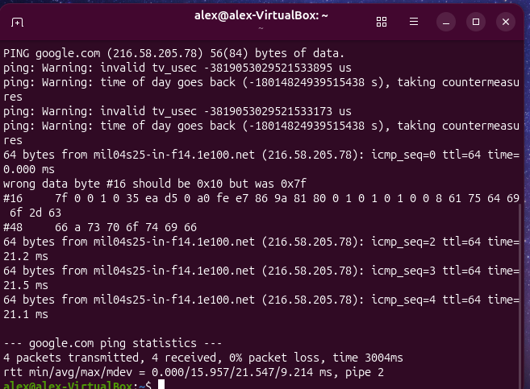
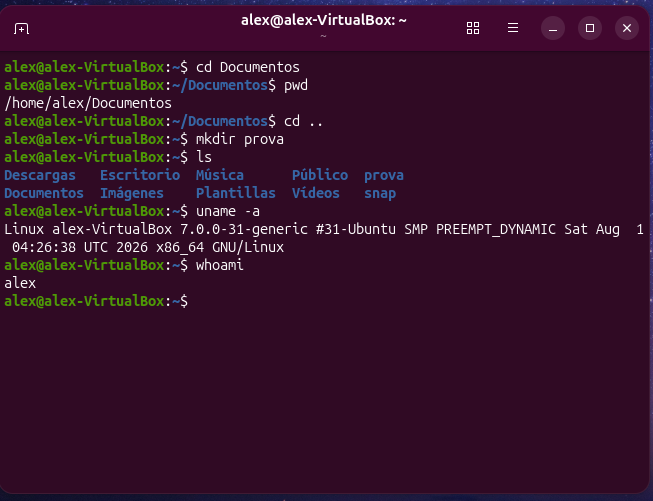
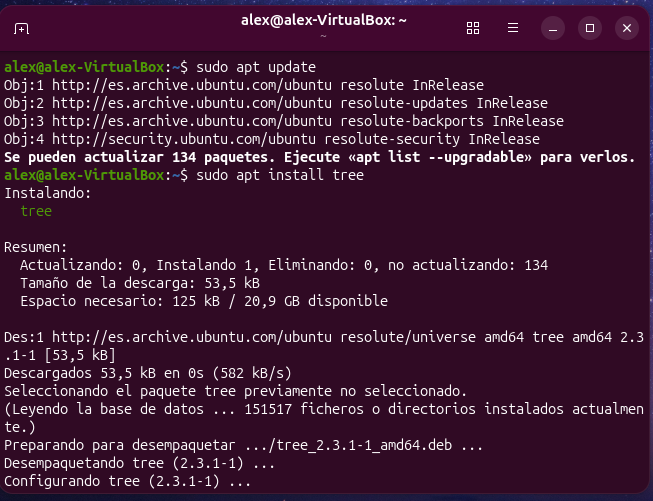

8 apartats
2 sistemes: Windows i Ubuntu
VirtualBox entorn de treball
Índex d'apartats
1 Instal·lació del sistema operatiuInstal·lació d'Ubuntu en una màquina virtual de VirtualBox, arrencant des de la imatge ISO i seguint l'assistent pas a pas.
WINDOWS 11 Instal·lació de Windows
PENDENT
Falta afegir els passos i les captures de la instal·lació de Windows.
UBUNTU Instal·lació d'Ubuntu
Arrencar la màquina virtual des de la imatge ISO d'Ubuntu.
Triar «Instal·lar Ubuntu» i la instal·lació interactiva.
Utilitzar la connexió per cable i la selecció d'aplicacions predeterminada, sense programari privat addicional.
Resultat Escriptori d'Ubuntu funcionant a la màquina virtual.
↑ Tornar a l'índex
2 Punts de restauracióGuardar l'estat del sistema abans d'un canvi per poder tornar enrere si alguna cosa falla.
WINDOWS 11 Punts de restauració
PENDENT
Falta afegir l'explicació i les captures dels punts de restauració a Windows.
UBUNTU Instantànies a VirtualBoxA la màquina virtual d'Ubuntu es crea una instantània abans de fer canvis. Si cal, es pot restaurar l'estat guardat.
Instantània «Abanç_canvi» Punt de restauració creat a la màquina Ubuntu abans de fer canvis.
↑ Tornar a l'índex
3 ParticionsDurant la instal·lació d'Ubuntu s'ha triat la instal·lació manual per definir les particions del disc.
WINDOWS 11 Gestió de particions
PENDENT
Falta afegir l'explicació i les captures de la gestió de particions a Windows.
UBUNTU Particionat manual
Partició Tipus Punt de muntatge Mida
sda1Ext4 /30,00 GB sda3Ext4 /home15,00 GB sda4Swap — 8,68 GB
↑ Tornar a l'índex
4 VirtualitzacióCreació de la màquina virtual a VirtualBox amb la imatge ISO d'Ubuntu.
UBUNTU
Programari: VirtualBoxDisc dur: VDI de 30 GBCPU: 2
Nom i imatge ISO Nom de la màquina i ISO d'Ubuntu.
Maquinari Memòria base i nombre de CPU.
Disc dur virtual Disc VDI de 30 GB.
↑ Tornar a l'índex
5 Gestors d'arrencadaRevisió de la configuració de GRUB, el gestor d'arrencada d'Ubuntu.
UBUNTU
$ cat /etc/default/grub
$ ls /boot/grub
↑ Tornar a l'índex
6 Xarxa bàsicaComprovació de l'adreça IP de la màquina i de la connexió a Internet.
UBUNTU
$ ip a
$ ping google.com
Interfície: enp0s3IP: 10.0.2.15/24Ping: 4 paquets, 0% perduts
ip a Adreces de les interfícies de xarxa.

ping google.com Comprovació de la connexió.
↑ Tornar a l'índex
7 Comandes generalsComandes bàsiques per moure's pel sistema i consultar informació.
UBUNTU
cdpwdmkdirlsuname -awhoami

Sessió al terminal Navegació, creació d'una carpeta i informació del sistema i de l'usuari.
↑ Tornar a l'índex
8 Instal·lacions d'aplicacionsInstal·lació de programari des dels repositoris d'Ubuntu amb apt.
UBUNTU
$ sudo apt update
$ sudo apt install tree
$ tree --version

Actualitzar i instal·lar apt update i apt install tree.
Comprovació Versió de tree un cop instal·lat.
↑ Tornar a l'índex